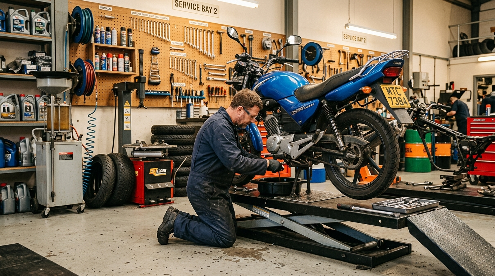
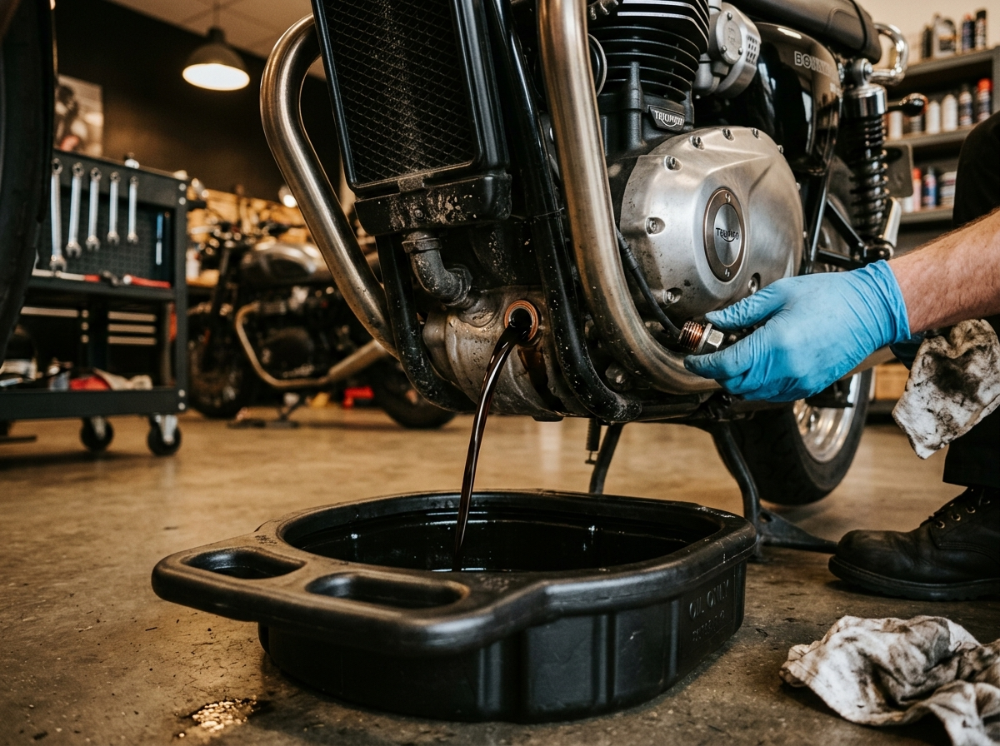
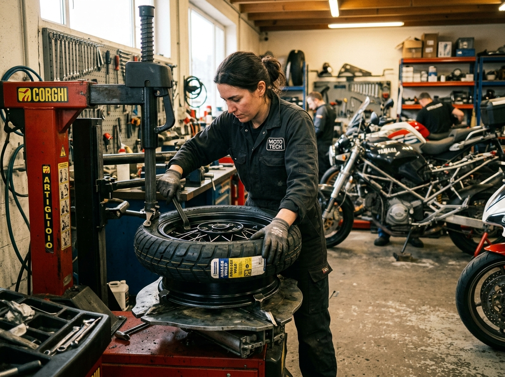
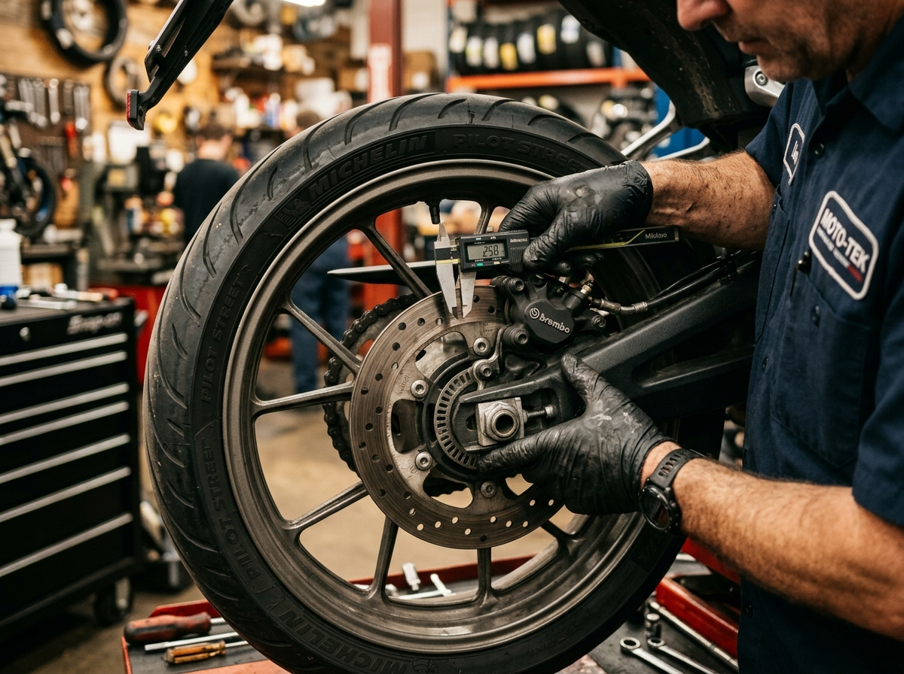
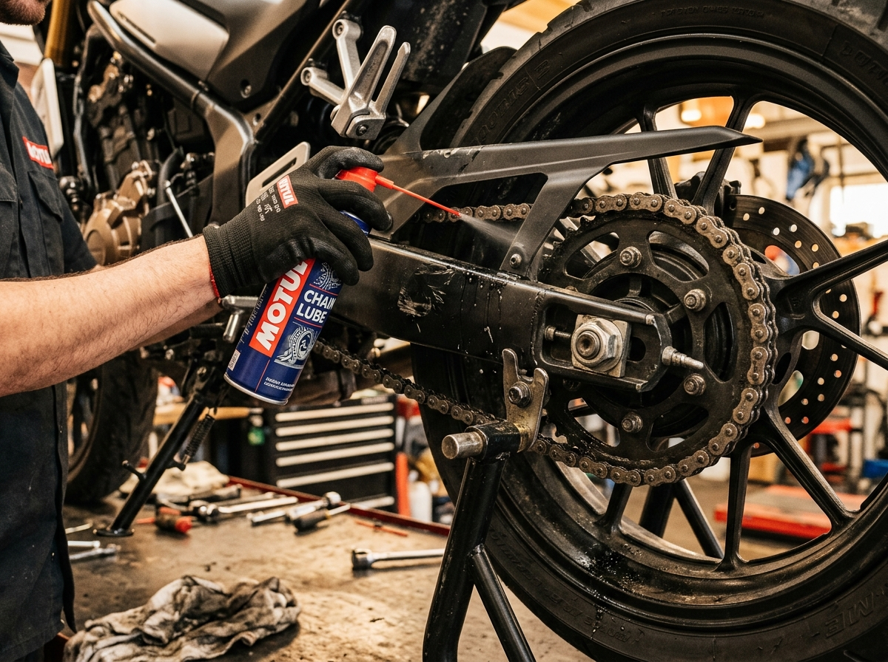
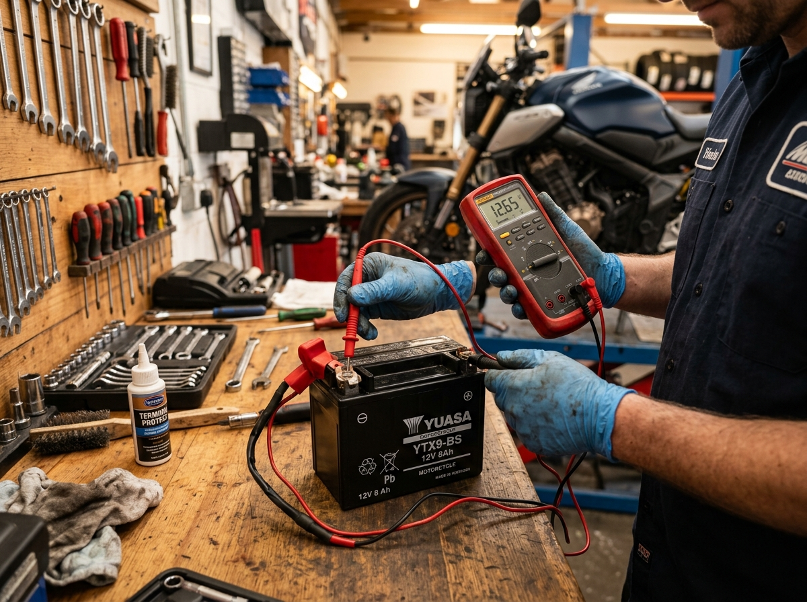
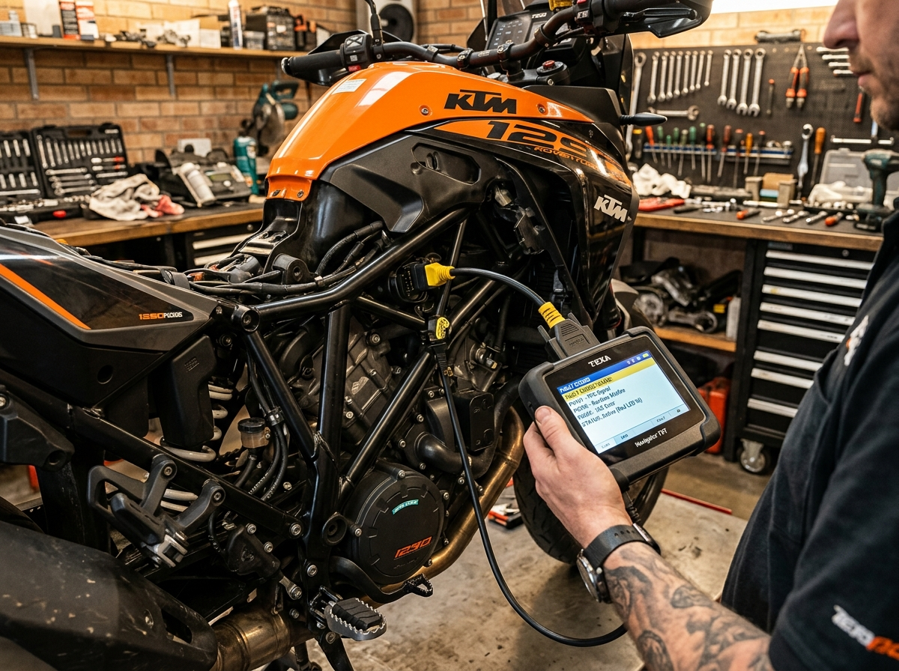

Our Services
Everything your motorcycle needs to stay road-ready.
From routine maintenance to fault diagnostics — browse our service categories and find what your motorcycle needs.
Service
Routine Servicing
A general inspection covering fluids, fasteners, tyres, brakes, chain and battery. Designed to catch developing issues before they become problems. Ideal for regular maintenance between major services.
Commonly needed when: Extended riding without inspection, unusual noises or vibrations, before a long trip.
View Details

Service
Engine Oil & Filter Change
Engine oil replacement with filter change where applicable. Includes leak inspection and proper oil level verification. Oil grade selected based on your motorcycle's requirements.
Commonly needed when: Oil appears dark or gritty, engine sounds rough, mileage interval reached, oil warning light.
View DetailsService
Tyre Replacement
Tyre inspection, wear assessment, replacement and pressure adjustment. We also check valve stems, rim condition and tyre age. Tyres are your only contact with the road — condition matters.
Commonly needed when: Tread wear indicators visible, cracks or bulges, loss of grip, frequent pressure loss.
View Details

Service
Brake Servicing
Brake pad and disc inspection, fluid check, lever and pedal adjustment, caliper condition assessment. We check both front and rear brake systems for consistent stopping power.
Commonly needed when: Squealing or grinding noise, spongy brake feel, increased lever travel, dark brake fluid.
View DetailsService
Chain Adjustment & Lubrication
Chain tension measurement, cleaning, lubrication and sprocket inspection. A well-maintained chain system improves power delivery and extends component life significantly.
Commonly needed when: Chain is dry or noisy, visible slack, sprocket teeth look worn, inconsistent power delivery.
View Details

Service
Battery Testing & Replacement
Battery voltage and load testing, terminal inspection and cleaning, charging system check. We recommend replacement when the battery can no longer maintain sufficient charge.
Commonly needed when: Slow cranking, electrical issues, battery over 2–3 years old, visible corrosion, frequent jump-starts.
View DetailsService
Engine & Electrical Diagnostics
Fault code reading, electrical circuit testing, sensor inspection and systematic investigation of engine and electrical issues. We use general-purpose diagnostic tools suitable for a wide range of motorcycles.
Commonly needed when: Warning light on, engine misfires, starting problems, electrical components not working, battery draining quickly.
View Details
Book an Appointment
Need a service for your motorcycle?
Choose the service you need and book an appointment. We'll confirm availability and take it from there.
Book Service